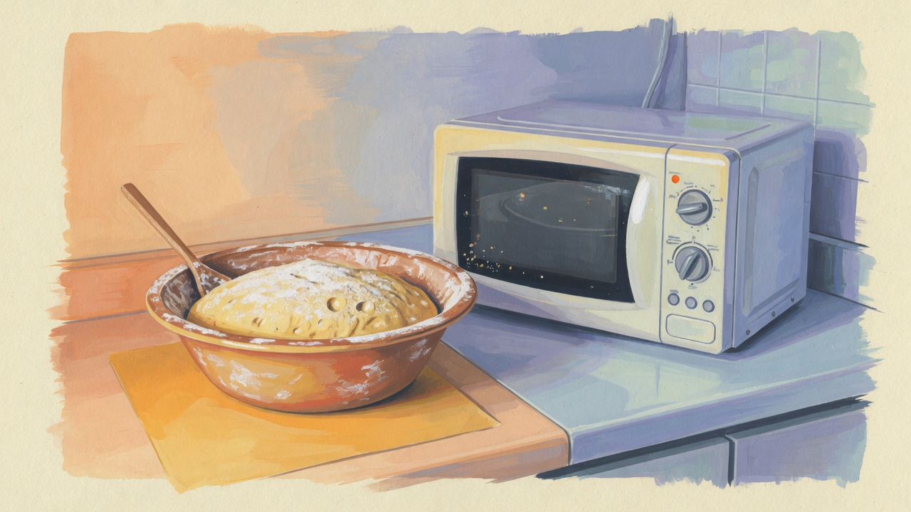

시험 당일을 글로 남기는 이유
합격 후기에서 빠지기 쉬운 것은 당일의 사소한 선택입니다. 무엇을 챙겼는지, 필기 후 무엇을 하지 않았는지, 손목을 어떻게 쉬게 했는지 — 이런 것이 다음 준비자에게는 체크리스트가 됩니다. 저는 2025년 5월 시험 전후를 메모해 두었고, 이 글은 그 기록을 정리한 것입니다.
시험장 이름·정확한 일정은 개인 정보와 연도 차이가 있을 수 있어 최소화했습니다. 행동과 판단 기준 위주로 적습니다.
전날 — 새 연습 없이, 준비물만
시험 전날은 새 반죽을 하지 않았습니다. 3편에서 적었듯, 직전에 새 루틴을 넣으면 불안을 줄이는 대신 손이 흔들리는 경우가 있었습니다. 대신 준비물을 두 번 점검했습니다.
- 신분증, 수험표, 필기 도구
- 실기용 유니폼·앞치마·모자 (시험 요강 기준)
- 타이머·온도계 (허용 범위 확인)
- 간단한 간식·물 (필기·실기 사이)
잠은 평소보다 30분 일찍 눕는 정도만 했습니다. '완벽한 수면'을 강요하면 오히려 긴장됐습니다. 알람은 두 개 설정해 두었습니다.
전날 밤 반죽 연습은 하지 않았습니다. 손가락 관절이 붓는 느낌이 있었고, 선생님이 '전날은 가볍게'라고 했기 때문입니다. 대신 도구 목록만 세 번 확인했습니다. 스크래퍼 하나가 빠져 있으면 성형에서 2분을 잃을 수 있다고 봤습니다.
필기 당일 오전
필기는 4편에서 적은 대로 2회독으로 풀었습니다. 모르는 문제에 오래 붙잡지 않고 표시만 했습니다. 시험 종료 후 점수를 맞춰 볼 생각은 하지 않았습니다. 실기까지 남은 컨디션을 아껴야 했기 때문입니다.
필기 직후 동기들과 정답 논쟁을 피했습니다. 맞혔다고 안심하거나, 틀렸다고 무너지는 것 모두 실기에 방해가 될 수 있다고 판단했습니다. 간단히 식사 후 30분 눈 감기를 했습니다.
필기와 실기 사이 — 손을 쉬게 한 시간
필기와 실기 사이 간격이 있었습니다. 이 시간에 반죽 연습을 하고 싶은 마음이 들었지만, 하지 않았습니다. 대신 손목 스트레칭·가벼운 산책·수분만 챙겼습니다. 시험장 근처를 처음 와 본 것이 아니라, 모의 시험 때 한 번 와 본 경로를 그대로 따라갔습니다.
실기 시작 1시간 전에는 화장실·유니폼 착용·도구 배치를 끝내 두었습니다. 마지막 10분에 서두르면 호흡이 거칠어졌던 연습 경험이 있어, 여유를 두는 쪽을 택했습니다.
실기 — 익숙한 품목만, 시간은 타이머에
실기에서는 연습한 품목 중 가장 익숙한 루트만 선택했습니다. 시험장 오븐이 학원과 다를 수 있다는 긴장은 있었지만, 반죽 종료 온도와 발효 판단은 평소와 같은 기준을 썼습니다. 타이머는 반죽 시작과 동시에 켰습니다.
중간에 한 번, 성형 단계에서 2분 지연을 느꼈습니다. 당황해서 속도를 내려다 오히려 손이 더 떨렸습니다. '빨리'보다 익숙한 순서대로 되돌아갔고, 후반 정리 시간을 줄이는 대신 필수 단계는 건너뛰지 않았습니다. 완성 후 표면이 완벽하진 않았지만, 규격과 시간 안에 냈다고 판단했습니다.
합격 확인 — 기쁨보다 먼저 온 것
결과는 합격이었습니다. 솔직히 첫 감정은 환호라기보다 안도에 가까웠습니다. 8개월간 반복한 반죽 메모가 헛되지 않았다는 확인이었습니다. 곧이어 든 생각은 '이제 밤식빵을 본격적으로 연구할 수 있겠다'였습니다. 기능사가 목적이었지만, 최종 목표는 여전히 추억의 맛이었습니다.

합격자 명단을 찾을 때 이름을 세 번 읽었습니다. 제 이름이 맞는지, 옆 사람 이름과 섞이지 않았는지 확인했습니다. 기쁨보다 먼저 '정말 끝났나'는 안도가 왔습니다.
합격 직후 바로 한 정리
합격 당일 저녁, 다음을 적었습니다.

- 시험장에서 달랐던 점 (오븐 예열 속도, 습도 체감)
- 실기에서 지연된 공정과 원인
- 필기에서 헷갈렸던 유형 3개
- 다시 한다면 전날·당일 루틴에서 유지할 것
이 메모는 6편 빵 R&D로 넘어가는 방식에도 쓰였습니다. 시험용 반죽과 연구용 반죽의 차이를 구분하는 데 도움이 됐습니다.
시험장 오븐 — 첫 5분이 방향을 정했다
실기 시험장 오븐은 학원과 예열 속도가 달랐습니다. 첫 품목에서 10분째 색 변화가 평소보다 늦게 왔을 때, '온도가 낮은가'보다 '예열이 덜 됐는가'를 먼저 의심했습니다. 시험 중 오븐을 바꿀 수는 없으니, 후반 품목에서는 굽기 시간을 2~3분 조정하는 쪽으로 갔습니다. 규칙을 어긴 것이 아니라, 같은 목표(내부 익음·표면 색)를 다른 시간으로 맞춘 선택이었습니다.
습도도 체감상 건조했습니다. 스팀 분사 타이밍을 평소보다 약간 앞당겼고, 그날 메모에 '시험장 오븐 = 예열 5분 더 필요'라고 적어 두었습니다. 이 한 줄이 합격 후 R&D 집 오븐 기록과 비교할 때도 쓰였습니다.
합격 후에야 선명해진 아쉬움
합격했지만 아쉬움이 없었던 것은 아닙니다. 실기에서 성형 마감이 평소보다 거칠었고, 필기에서는 위생 숫자 문제를 하나 틀렸을 가능성이 있습니다. 다만 완벽한 하루를 기다리면 시험을 미루게 된다는 것도 알게 됐습니다. 80% 준비된 날에 가는 것이 저에게는 맞았습니다.
당일 저녁 가족에게 결과를 말했을 때, '이제 밤식빵?'이라고 물어봤습니다. 맞습니다. 기능사는 그 빵을 만들기 위한 통행증에 가깝고, 진짜 숙제는 그다음부터입니다.
컨디션 — 잠·식사·손목
시험 당일 아침은 평소 먹던 것과 비슷하게 먹었습니다. 새 음식은 소화 부담이 될 수 있어 피했습니다. 카페인은 평소 양만 유지했고, 과다 섭취는 하지 않았습니다. 손목은 전날부터 가벼운 스트레칭을 했고, 실기 직전에도 1분 정도 풀어 주었습니다.
긴장은 정상이라고 생각했습니다. 긴장을 없애려 하기보다, 익숙한 동작을 그대로 반복하는 데 집중했습니다. 호흡이 빨라지면 타이머만 보고 다음 단계로 넘어갔습니다. '지금 뭐 해야 하지?'를 줄이는 것이 당일 최우선이었습니다.
시험이 가까운 분께
당일은 새 것을 보여 주는 날이 아니라, 연습한 것을 반복하는 날로 생각했습니다. 3편 실기, 4편 필기와 함께 보면 준비·당일 흐름이 연결됩니다.
다음 편 기능사 이후 빵 연구 방식에서 시험 이후 기록을 어떻게 이어갔는지 적습니다.
실전 적용 노트
시험 당일 체크리스트를 전날 사진으로 남겨 두었습니다. 도구 사진 한 장이면 아침에 누락을 줄일 수 있습니다. 필기·실기가 다른 장소면 이동 시간을 모의 때 한 번 재어 두는 것을 권합니다.
가족에게 '결과 나오면 연락한다'고만 말하고, 시험 중 메시지는 끊었습니다. 집중이 흐트러지는 요소를 미리 줄인 선택이었습니다. 불합격이 나와도 당일 메모는 합격 때와 같이 남기길 권합니다. 다음 도전의 재료가 됩니다. 시리즈 5편입니다.
정리하며
2025년 5월 합격은 2024년 9월 퇴사 후 걸어온 길의 한 지점입니다. 이 블로그 기록은 2026년부터 발행했지만, 내용은 그때의 경험을 바탕으로 합니다. 다른 회차·지역 경험은 문의로 공유해 주시면 반영하겠습니다.
초보자가 자주 실수하는 포인트
- 시험 전날 새 품목·새 레시피로 연습하기
- 필기 직후 정답 논쟁으로 컨디션 소모
- 실기 직전 과도한 속도로 손 떨림 유발
- 준비물 점검 없이 당일 아침에만 챙기기
체크리스트
- 전날 준비물 사진·두 번 점검
- 필기 2회독 시간 배분 연습
- 필기·실기 사이 손목·수분·휴식
- 합격 여부와 관계없이 당일 메모 남기기
자주 묻는 질문
- 실기에서 약간 실수해도 합격할 수 있나요?
- 저는 완벽하지 않았지만 합격했습니다. 채점 기준·품목은 회차마다 다릅니다. 규격·시간·필수 공정을 우선했습니다.
- 불합격 후 바로 재도전하려면?
- 당일 메모의 '지연 공정'부터 보면 다음 일정이 잡힙니다. 2편 로드맵에서 약한 구간만 짧게 재배치하는 방식을 참고할 수 있습니다.
이 글은 운영자의 직접 경험을 바탕으로 작성되었으며, 오븐·재료·환경에 따라 결과는 달라질 수 있습니다. 식품 위생·알레르기 등 건강 관련 판단을 대체하지 않습니다.